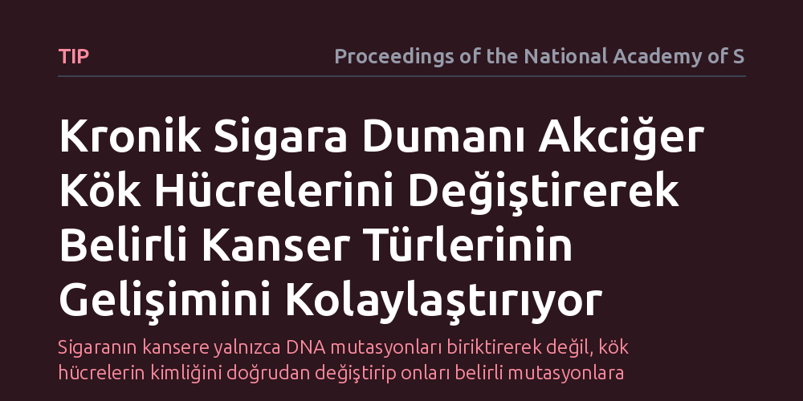

TIP · Proceedings of the National Academy of Sciences · 2026-10-23
Araştırmacılar, kronik sigara dumanının yol açtığı iltihabın akciğer öncül hücrelerini nasıl değiştirdiğini ve farklı kanser türlerinin oluşumuna nasıl zemin hazırladığını inceledi. Bulgular, uzun süreli duman maruziyetinin kök hücrelerin gelişim yolunu saptırarak onları belirli genetik mutasyonlara bağımlı kanser alt tiplerine dönüştürdüğünü gösterdi.
Sigaranın kansere yalnızca DNA mutasyonları biriktirerek değil, kök hücrelerin kimliğini doğrudan değiştirip onları belirli mutasyonlara muhtaç hale getirerek de yol açtığını gösteriyor.

Akciğer kanseri ile sigara arasındaki ilişki on yıllardır bilinmesine rağmen, bu sürecin en erken evrelerinde hücresel düzeyde neler yaşandığı uzun süre aydınlatılamadı. Yaygın kabul gören klasik görüş, sigara dumanındaki toksik maddelerin DNA üzerinde rastgele hasarlar bırakarak zamanla mutasyon birikimine yol açtığı yönündeydi. Ancak bu açıklama, aynı dumana maruz kalan bireylerde neden birbirinden çok farklı biyolojik özellikler gösteren kanser alt tiplerinin geliştiğini açıklamakta yetersiz kalıyordu.
Bu sorunun yanıtı hem erken tanı hem de kişiselleştirilmiş tedavi yaklaşımları açısından hayati bir değer taşıyor. Şayet dumanın yarattığı kronik iltihap, hücrelerin gelişimsel rotasını henüz genetik bir mutasyon oluşmadan önce saptırıyorsa, kanserleşme sürecine müdahale etme penceremiz de düşünülenden çok daha erken bir evreye çekilebilir.
Araştırmacılar, sigaranın akciğer dokusundaki kök ve öncül hücre toplulukları üzerindeki uzun vadeli etkisini incelemek üzere kontrollü laboratuvar modellerinden faydalandı. Akciğer dokusunun yenilenmesini ve onarımını yöneten bu öncül hücreler, kronik duman maruziyetinin tetiklediği iltihabi ortamda adım adım izlendi. Hücrelerin gen anlatım profilleri ve gelişim yörüngeleri hücresel analizlerle incelendi.
Çalışmada özellikle KRAS gibi bilinen onkogenik mutasyonların hangi hücresel zeminlerde üstünlük sağladığı araştırıldı. Dokudaki iltihabi mikroçevrenin, hücrelerin hayatta kalma mekanizmalarını ve farklılaşma yeteneklerini nasıl yeniden programladığı takip edildi.
Elde edilen bulgular, kronik sigara dumanının yol açtığı iltihabın akciğer öncül hücrelerini özgün ve kalıcı gelişimsel durumlara ittiğini gösterdi. Duman maruziyeti, bu hücrelerin olağan gelişim çizgilerini bozarak onları belirli genetik sürücülere karşı aşırı duyarlı ve bağımlı hale getiriyordu. Araştırma ekibi, sigaranın yarattığı kronik iltihaplanmanın 'akciğer öncül hücre popülasyonlarının evrimini yönlendirdiğini' ortaya koydu.
Bu durum, küçük hücreli dışı akciğer kanserinin alt tiplerinin tesadüfen oluşmadığını gösteriyor. Dumanın baskısıyla belirli bir gelişimsel yolağa hapsolan öncül hücreler, ancak KRAS gibi belirli bir genetik hata devreye girdiğinde çoğalıp hayatta kalabilen bir hücresel bağımlılık geliştiriyor. Yani iltihap, hücreleri belirli bir mutasyona muhtaç olacak şekilde hazırlıyor.
Bu çalışma, doku hasarı ve iltihaplanma ile genetik mutasyonlar arasındaki köprüyü çok daha net bir biçimde kuruyor. Kanserleşmenin yalnızca tekil gen bozukluklarından kaynaklanmadığı, dokunun maruz kaldığı kronik çevre koşullarının hücreleri bu bozuklukları kabul etmeye önceden hazırladığı anlaşılıyor. Bu kavrayış, gelecekte sigara geçmişi bulunan bireylerde kanser riskini hücre durumları düzeyinde değerlendirebilmenin önünü açabilir.
Yine de bu bulguların laboratuvar ortamındaki model sistemlere dayandığını göz ardı etmemek gerekir. İncelenen hücresel dönüşümlerin insan kliniklerinde doğrudan bir tanı ya da tedavi aracına dönüşebilmesi için daha geniş hasta doku serilerinde doğrulanması gerekiyor. Ancak çalışma, sigaranın hücresel düzeyde bıraktığı kalıcı izleri anlamak adına sağlam bir mekanistik temel sunuyor.